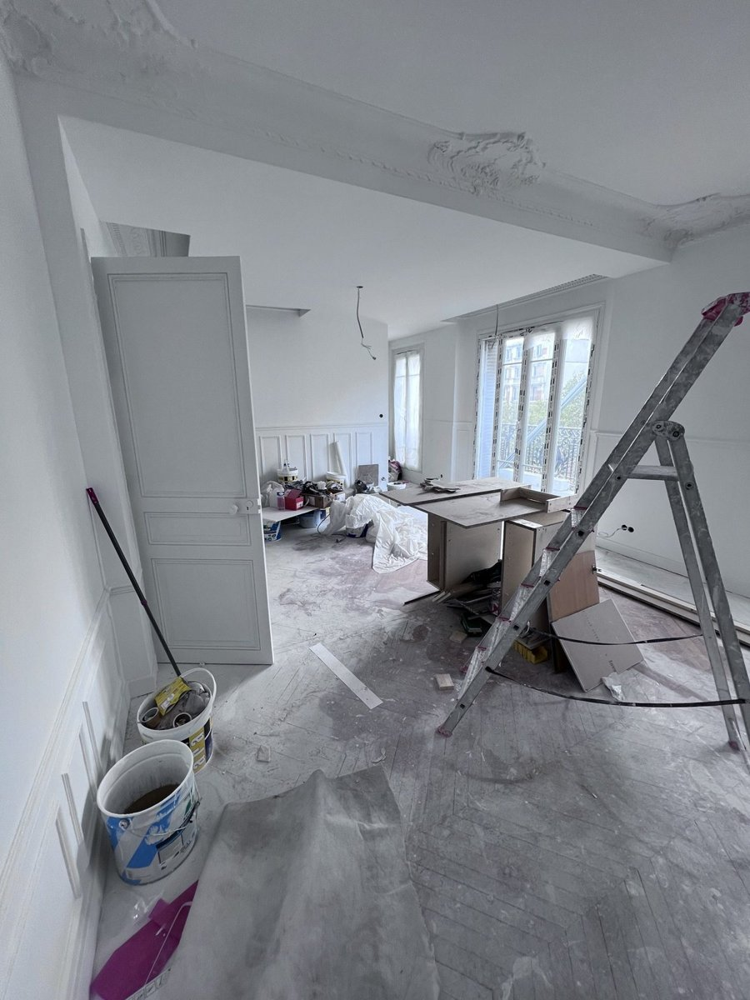
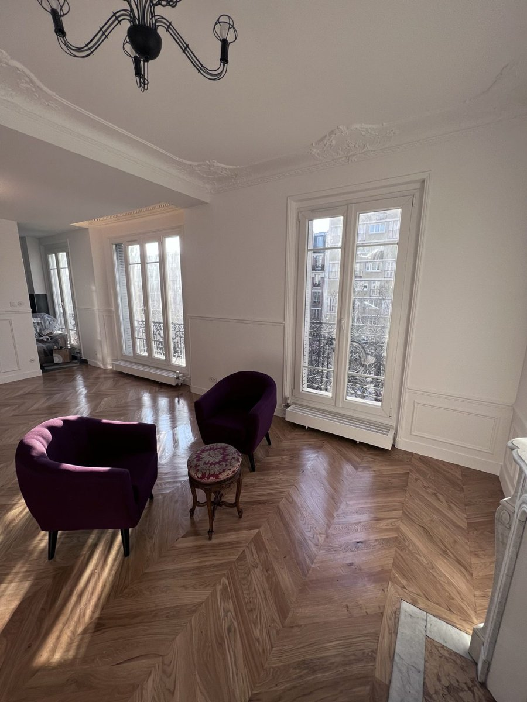

Shilat Batinova est une entreprise de rénovation tous corps d'état installée à Paris, qui intervient dans toute l'Île-de-France pour les particuliers comme pour les professionnels. Son activité couvre notamment la rénovation de maison en Île-de-France, mais aussi celle des appartements, des salles de bain, des cuisines et des locaux commerciaux.
1. Faire le point sur l'état de la maison
Tout commence par une visite sur place. Elle sert à relever les dimensions, à vérifier l'état de l'installation électrique, de la plomberie et du chauffage, à repérer les zones humides et les murs porteurs, et à comprendre ce que les occupants attendent des travaux. C'est sur cette base qu'est établi un devis détaillé, gratuit.
2. Fixer les priorités et l'ordre des travaux
Dans une maison, les postes de travaux se suivent dans un ordre logique :
- la maçonnerie et les éventuelles modifications de cloisons ;
- les réseaux : électricité, plomberie, chauffage et ventilation ;
- l'isolation et les menuiseries ;
- les sols, le carrelage et la peinture ;
- l'aménagement de la salle de bain et de la cuisine.
Respecter cet enchaînement évite de reprendre un travail déjà terminé. Selon le budget, le chantier peut être réalisé en une seule fois ou découpé en plusieurs phases.


3. Boulogne-Billancourt et Sartrouville
Pour une rénovation de maison à Boulogne-Billancourt comme pour rénover une maison à Sartrouville, la démarche reste la même : une visite, un devis poste par poste, puis un chantier coordonné par un seul interlocuteur, du premier rendez-vous à la fin des travaux.
4. Un seul interlocuteur pour tous les corps de métier
Maçonnerie, plomberie, électricité, isolation, menuiserie, carrelage, peinture, chauffage et climatisation sont coordonnés sur le même chantier. L'entreprise installe également des panneaux photovoltaïques, et les travaux sont couverts par l'assurance décennale.
Contact
Du lundi au vendredi, de 8 h à 18 h
Téléphone : 01 84 80 32 11
E-mail : batinova.sh@gmail.com
Siège social : 58 rue de Monceau, 75008 Paris
Zone d'intervention : Paris et toute l'Île-de-France